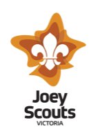
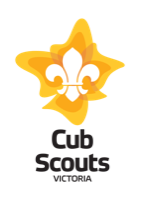
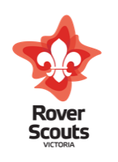

A journey of up to 20 years — from Joey Scouts all the way through to Rovers. Find the right section for your young person.

The youngest members of our Scouting family, the Joey Scout Mob gives children aged 5–8 a safe, fun and exciting introduction to Scouting. In their "mob", Joeys discover the world around them through play, creativity, and simple outdoor adventures.
Joeys work towards the Promise Challenge — the highest award in the Joey Scout section, recognising achievement across a range of activities.
🏅 Peak Award: Promise Challenge
With around 70 active members, our Cub Scout Pack is one of the largest and most active in the region. Cubs aged 8–11 experience a rich, varied program that builds confidence, teamwork and a lifelong love of the outdoors — all while having a lot of fun.
Cubs work through a structured progression towards the Grey Wolf — the highest award in the Cub Scout section.
🏅 Peak Award: Grey WolfThe Scout Troop is where the real adventure begins. Scouts aged 11–15 operate in the iconic patrol system — small teams led by a Patrol Leader, planning and running their own activities with increasing independence. This is where leadership, self-reliance and genuine outdoor skills are forged.
The highest achievement in the Scout section is the Scout Medallion — a nationally recognised award representing excellence across all areas of the Scout program.
🏅 Peak Award: Scout MedallionThe Venturer Unit is a self-led group for young people aged 15–18. Venturers plan, organise and lead their own adventures and projects — with adult advisers available for support and safety, not direction. There is no prior Scouting experience required to join.
The highest award in Venturers is the prestigious Queen's Scout Award — one of Australia's most recognised youth achievement awards. It is acknowledged for entry by several Australian universities as a mark of exceptional character and achievement.
Our Venturer Unit leads ongoing environmental monitoring at Holloway Bend on Port Phillip Bay — studying the reef ecosystem, tracking microplastic pollution, and contributing to Commonwealth-funded marine research. Real science, with real impact.

The Surrey Thomas Rover Crew is our adult youth section for those aged 18–25. Rovers are entirely self-run — the Crew elects its own Crew Leader and plans all of its own activities. There is no prior Scouting experience required to join.
The highest award available to Rovers is the Baden-Powell Award — named after Scouting's founder, Robert Baden-Powell, this award recognises outstanding achievement across community service, personal development and adventure.
🏅 Peak Award: Baden-Powell AwardTry it free for 3 nights — no joining fee, no pressure. Just turn up and see if Scouting is right for you.